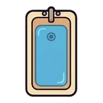
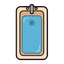
bano [0, 0] · furniture
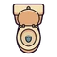
bano [0, 1] · furniture · ocupable
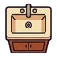
bano [0, 2] · furniture
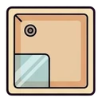
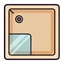
bano [1, 0] · furniture · ocupable
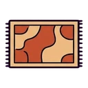
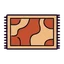
bano [1, 1] · furniture · variante de rug
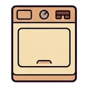
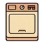
bano [1, 2] · furniture
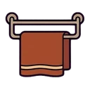
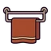
bano [2, 0] · furniture
bano [2, 1] · furniture · variante de plant
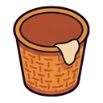
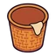
bano [2, 2] · furniture
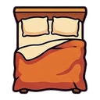
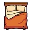
casa [0, 0] · furniture · ocupable
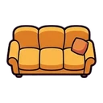
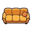
casa [0, 1] · furniture · ocupable
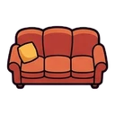
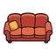
casa [0, 2] · furniture · variante de sofa
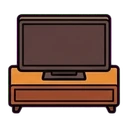
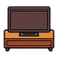
casa [0, 3] · furniture
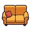
casa [0, 4] · furniture · variante de sofa
casa [1, 0] · furniture
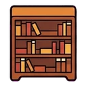
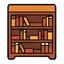
casa [1, 1] · furniture
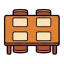
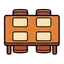
casa [1, 2] · furniture
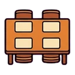
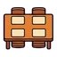
casa [1, 3] · furniture · variante de table
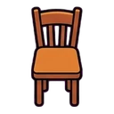
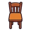
casa [2, 0] · furniture · ocupable
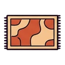
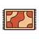
casa [2, 1] · furniture · ocupable
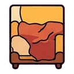
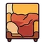
casa [2, 2] · furniture · ocupable
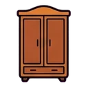
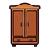
casa [2, 3] · furniture
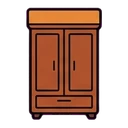
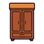
casa [2, 4] · furniture · variante de wardrobe
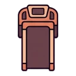
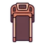
gimnasio [0, 0] · furniture · ocupable
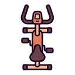
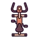
gimnasio [0, 1] · furniture · ocupable
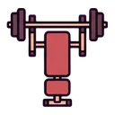
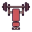
gimnasio [0, 2] · furniture · ocupable
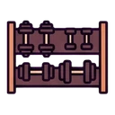
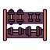
gimnasio [1, 0] · furniture
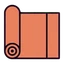
gimnasio [1, 1] · furniture · ocupable
gimnasio [1, 2] · furniture
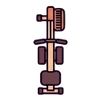
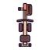
gimnasio [2, 0] · furniture · ocupable
gimnasio [2, 1] · furniture
gimnasio [2, 2] · furniture
tienda [0, 0] · furniture
tienda [0, 1] · furniture
tienda [0, 2] · furniture
tienda [1, 0] · furniture
tienda [1, 1] · furniture
tienda [1, 2] · furniture
tienda [2, 0] · furniture
tienda [2, 1] · furniture
tienda [2, 2] · furniture · ocupable
ui [0, 0] · window
ui [0, 1] · person
ui [0, 2] · ui
ui [1, 0] · ui
ui [1, 1] · ui
ui [1, 2] · ui
ui [2, 0] · victim
ui [2, 1] · ui
ui [2, 2] · ui